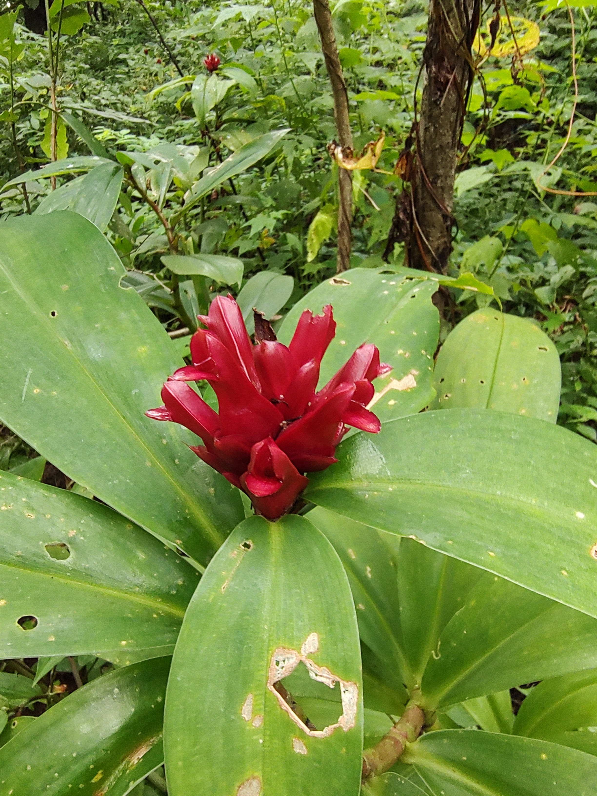
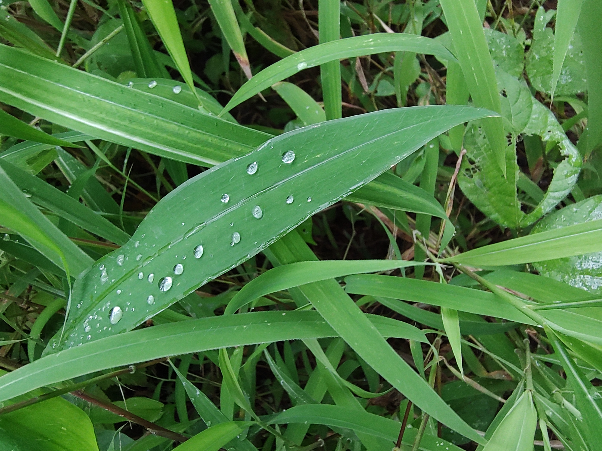

Welcome to Plantomaniya
Explore plants, flowers, weeds and more
There are roughly 400,000 known species of plants on planet Earth, of which the great majority, some 300,000 species, produce seeds.
Green plants provide a substantial proportion of the world’s molecular oxygen, and are the basis of most of Earth’s ecosystems.
Plants that produce grain, fruit, and vegetables also form basic human foods and have been domesticated for millennia.
Plants have many cultural and other uses, as ornaments, building materials, writing material and, in great variety, they have been the source of medicines and psychoactive drugs.

